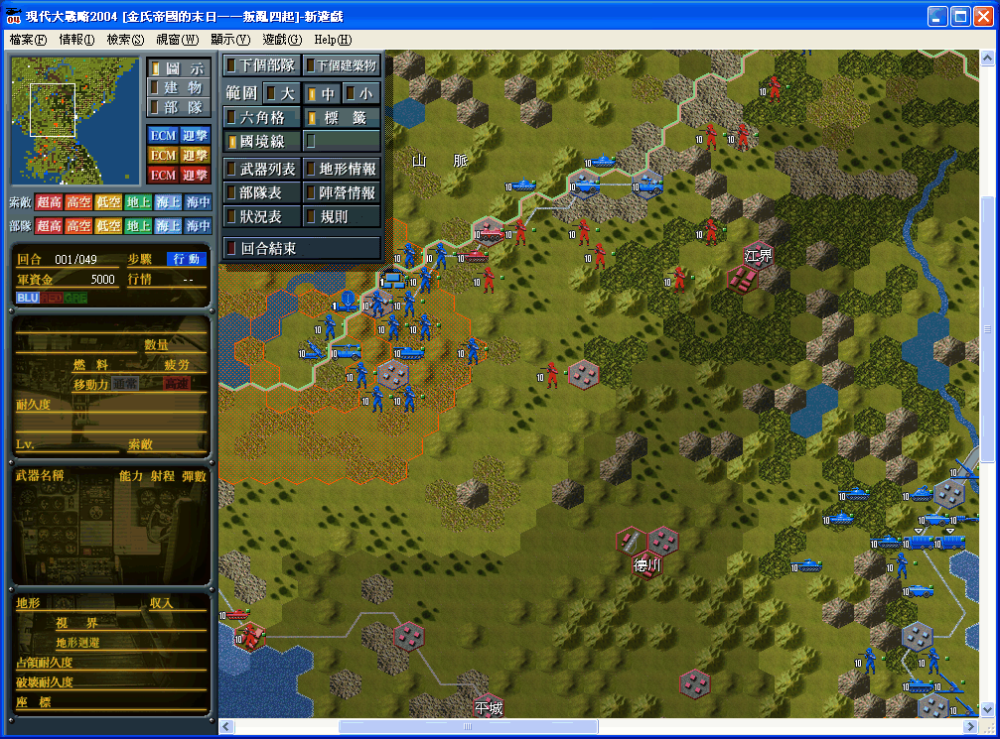

名稱：現代大戰略／現代大戰略2004 (中文版)
簡介：SystemSoft 2004年出品的戰略遊戲，2005年由光譜中文化並代理發行。由於內容牽涉
中日政治領土爭議，於是光譜中文化的同時，刪去了有關中共的所有劇本，引發部份
玩家不滿。2008年光譜代理發行「現代大戰略2008」，在首發版的同時，附贈本遊戲
的「完整補完版」光碟，加回原刪除的劇本 [待補]。

備註：本版缺「完整補完版」光碟
保護：原始版為光碟StarForce 3.04（儘量不要有兩個以上光碟機，否則可能無法啟動）
檔案：GD2004_MAP.rar = 原始版被刪的劇本補回檔（非官方檔案，由網友自行翻譯）